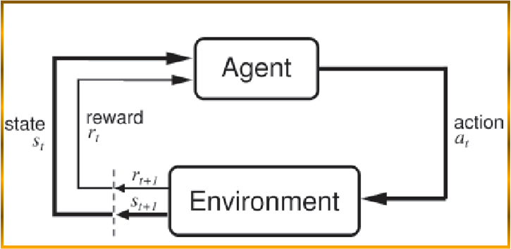

Research
I have conducted research both at work and through personal experience. Please click on a category to expand.
+ Artificial Intelligence and Machine Learning
Genetic Algorithms and Reinforcement Learning in Chess AI

This was a research project I conducted in my free time. The goal was to investigate various learning algorithms within an Artificial Intelligence Chess system. I investigated using a type of reinforcement learning dubbed "Td-leaf lambda" to learn from playing games against itself. I also investigaed the use of genetic algorithms to learn from playing games against itself. In the end, the genetic algorithms were more successful while playing chess games against itself. However, it is hypothesized that reinforcement learning is more adept at learning against human opponents.Most of the source for this program can be viewed on my github account
Touch Gesture Recognition on Mobile Devices
This is one of my current research projects involving examining different methods to perform gesture recognition on mobile devices. Specifically, I have targeted iOS and I am going to examine matching input gestures to a set of known touch gestures using machine learning principles.
Applying game theoretic principles to a Poker AI
This is my other current research project involving examining how game theoretic principles can be applied to a Poker AI. Specifically, I am hoping to create a dynamic system capable of using machine learning in combination with game theory to play perfect heads up poker.
+ Computer Graphics / Parallel Computing
Streamlining Image Filters/Transformations using Parallel Computing and GPUs
This research was completed at Colibri Technologies / SunnyBrook hospitals. I investigated how to streamline the data transfer from catheters onto a 3d image visualization. Image transformations and filters were optimized and offloaded to graphical processors, and the data flow was completed from catheter through an FPGA (where some image manipulation was performed) to the computer and finally to the GPU.